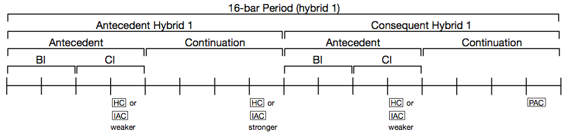
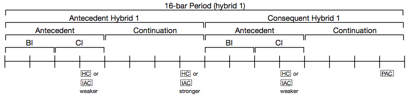

Musicianship Resources
Classical theme types
The following diagrams outline the key internal characteristics and functional role of the various theme types presented in William Caplin’s Classical Form. Consult Chapters 3–5 of that text for further explanation and examples.
Sentence

Period

Hybrid themes


Compound themes
 
